By the end, students should be able to:
AdaBoost.R2 builds a sequence of weak regression models. Each round fits a shallow regression tree to the same numeric-response dataset, while observation weights shift attention toward points that the current model predicts poorly. The individual trees are then combined into a single regression predictor.
We use one input variable (x) throughout, and the response (y) is numeric.
We will use one-split regression trees (stumps) so each step is visible.
We observe a response (y) for each value of a single predictor (x). The points are intentionally nonlinear, so one simple stump will not capture the whole pattern.
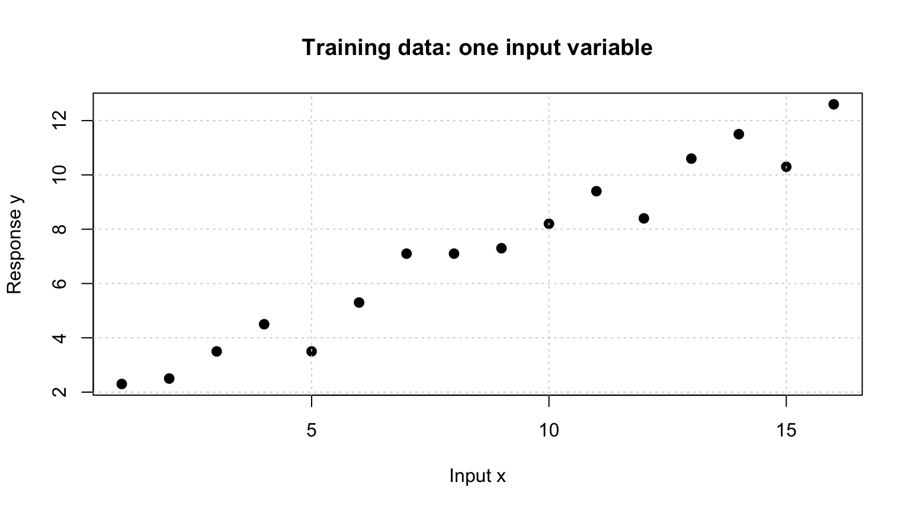
AdaBoost builds a sequence of small models:
Unlike a single tree, the ensemble can gradually correct patterns left behind by earlier trees.
For round (m), let (h_m(x_i)) be the prediction for observation (i).
The absolute error is (e_i=|y_i-h_m(x_i)|). Normalize it by the largest error in that round:
[ L_i=. ]
Thus (0L_i). The weighted round error is
[ E_m=_i w_i L_i,_i w_i=1. ]
For the classic AdaBoost.R2 scheme used in these slides, when (0<E_m<0.5), define
[ _m=, _m=(). ]
Update each observation’s weight by
[ w_i^{}w_i,_m^{,1-L_i}, ]
then normalize the weights to sum to one. Large-loss observations are downweighted less (and therefore become relatively more important) than small-loss observations.
A stump makes one split on (x) and predicts a constant within each side. We choose the split and leaf predictions to minimize weighted squared error for the current observation weights.
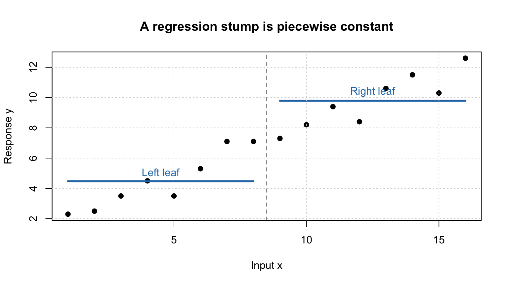
Initially, every observation is equally important:
[ w_i^{(1)}=1/n. ]
We fit the first stump using these weights. After predicting each training point, we calculate its normalized absolute loss and the weighted average loss.
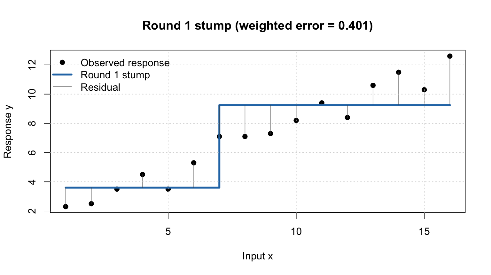
The normalized loss (L_i) is zero for a perfect prediction and one for the largest residual in the round. The weighted error (E_1) averages these losses using the current weights.
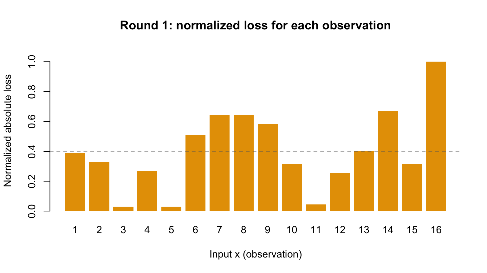
Observations with larger loss receive a smaller multiplicative penalty than well-predicted observations. After the update, weights are normalized to sum to one.
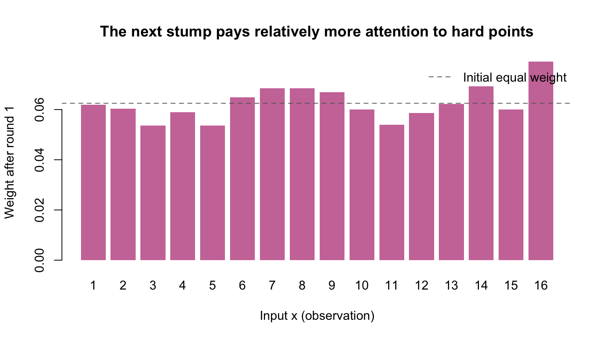
The second stump is fitted to the same observations, but the weighted squared-error criterion has changed because the weights changed. It may choose a different split and different leaf values.
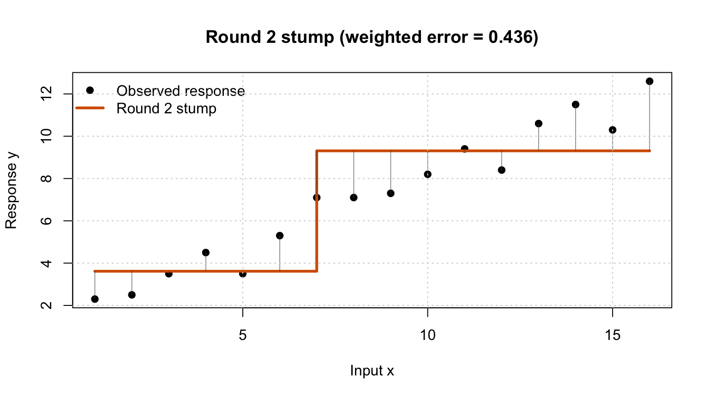
Compare the observation weights before and after round 2. A point that was hard for the current learner tends to become more influential in the next round.
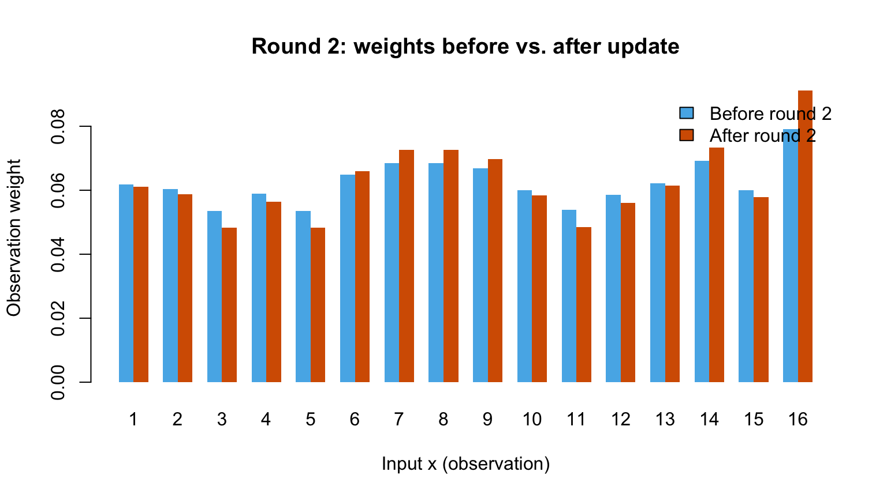
A third stump is fitted using the round-2 weights. Each new stump is not necessarily better everywhere; the purpose of boosting is to combine their strengths.
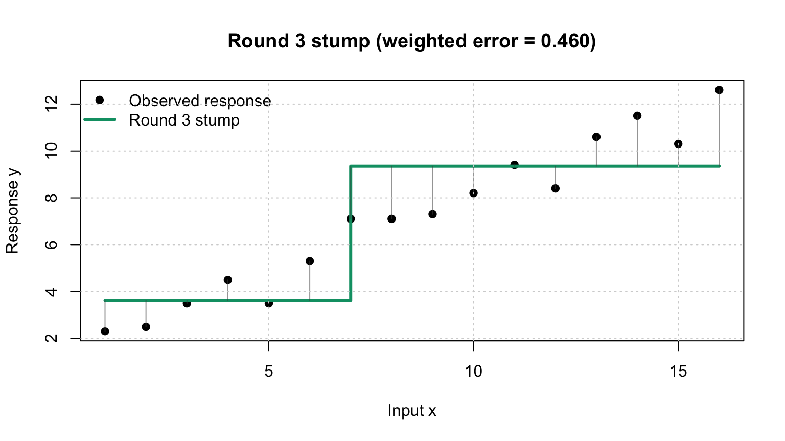
Each stump is a coarse approximation. Their split locations and predictions reflect the observation weights available at that round.
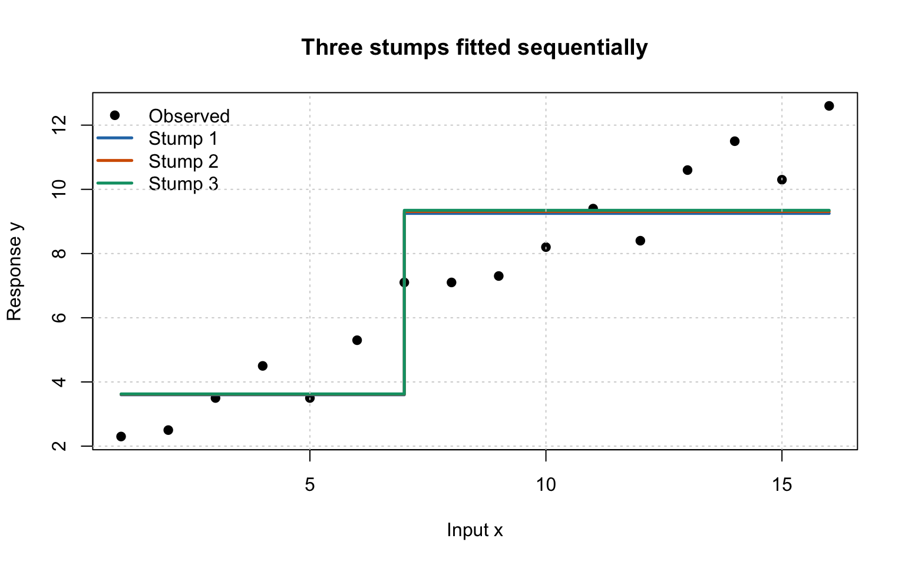
The classic AdaBoost.R2 prediction combines the learners using a weighted median, with learner weights (_m=(1/_m)). A weighted median is the first prediction value where the cumulative learner weight reaches at least half the total weight.
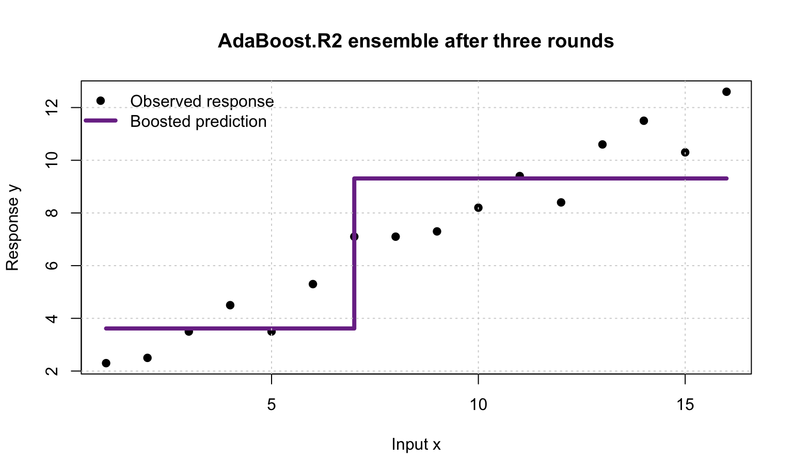
Compare the final predictions with the observed values. The vertical segments are residuals. A boosted model is not guaranteed to reduce every individual residual, but the sequence is designed to focus subsequent learners on observations that remain difficult.
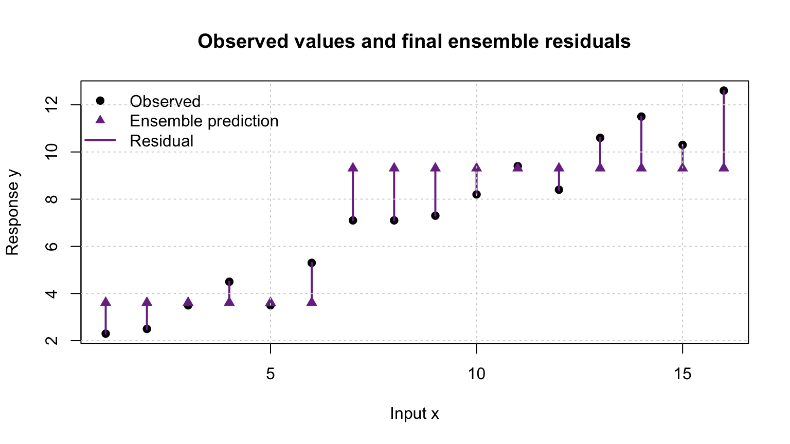
The plot below compares weighted normalized loss for each round with the ordinary mean absolute error of that round’s stump on the training data.
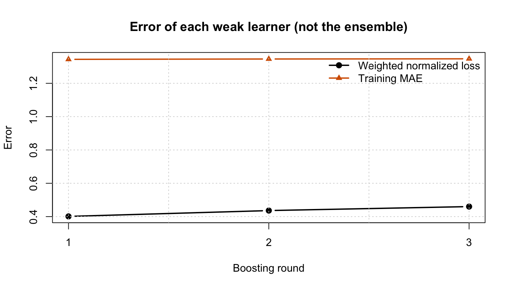
A learning-rate parameter ((0,1]) can make boosting more conservative. Implementations differ in exactly how they apply this parameter in AdaBoost.R2, so the learner-weight formula and update rule should always be checked for the chosen software. In this hand-worked version, () is used for the canonical weight updates shown above.
Takeaway: AdaBoost for regression is a sequential process: each weak learner is trained in the context created by the errors of previous learners.